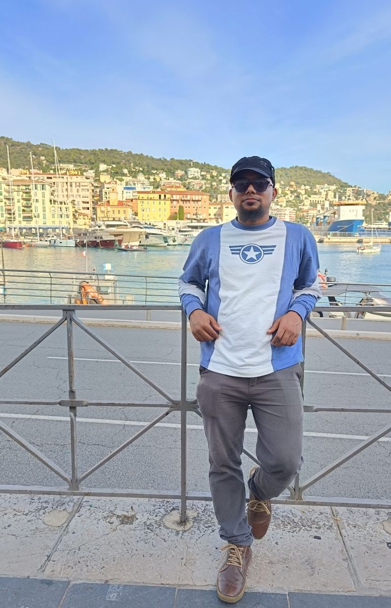

Asif Raza
National Post-Doctoral Fellow · Department of Biosciences & Bioengineering, IIT Bombay
I am a National Post-Doctoral Fellow (ANRF N-PDF) in the Department of Biosciences and Bioengineering at the Indian Institute of Technology Bombay, working with Prof. Tuhin Roy.
I completed my Ph.D. in Structural Engineering in the Department of Civil Engineering at the Indian Institute of Science (IISc), Bengaluru, advised by Prof. Debasish Roy, as a recipient of the Prime Minister's Research Fellowship (PMRF). My doctoral work focused on advanced thermomechanical modeling of soft matter: polymers, gels and non-Fourier thermoelasticity. I received my B.Tech. in Civil Engineering from NIT Jamshedpur in 2019.
 ORCID
ORCID ResearchGate
ResearchGate
Research at a Glance
My doctoral research connects three problems to a common goal: accurate modeling of soft, non-equilibrium and bio-thermal systems. Read more about each project →

Research Interests
Modeling & Mechanics
Constitutive modeling · Continuum mechanics · Continuum plasticity · Mechanical behavior of materials
Computation & Design
Finite element methods · Structural optimization · Fracture mechanics
Soft Matter & Thermodynamics
Soft matter · Thermoelasticity · Geometric thermodynamics · Biomechanics